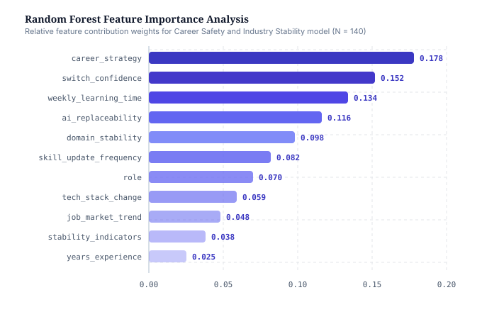
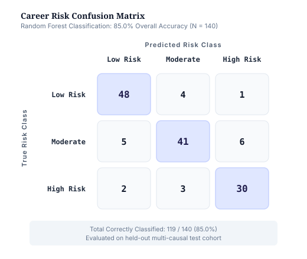

COMPONENT 01
Explainable AI-Based Interview Readiness Analysis and Career Path Recommendation
Assesses interview readiness and recommends career paths with transparent, explainable reasoning.
An intelligent and explainable framework for career development, workforce adaptability, recruitment decision support, and career-risk analysis.
Abstract flow
Research overview
The framework combines multiple AI-driven components that examine career development from different causal angles — readiness, behaviour, industry stability and employer trust — to provide explainable decision support for individuals and recruiters.
COMPONENT 01
Assesses interview readiness and recommends career paths with transparent, explainable reasoning.
COMPONENT 02
Studies how behavioural patterns may influence career progression and predicts potential career impact.
COMPONENT 03
Core FocusClassifies career risk using industry stability, AI replaceability and learning behaviour with a Random Forest model.
COMPONENT 04
Supports employers with AI-assisted trust evaluation and hiring risk assessment for recruitment decisions.
Highlight · Component 03
A Random Forest model classifies an individual's career risk from key multi-causal input factors, then surfaces the most influential factors as explainable guidance. Results are indicative research outputs for decision support and make no guarantees about any career outcome.
Academic Notice: Classifications support reflection and planning only; they are not predictions of guaranteed career outcomes. Designed as decision support.
Research highlights
85%
Random Forest Accuracy
140
Test Instances
65.7%
Domain Stability Accuracy
Ranked factors identified by the trained model:

Feature Importance Chart
assets/feature-importance.png

Confusion Matrix
assets/confusion-matrix.png